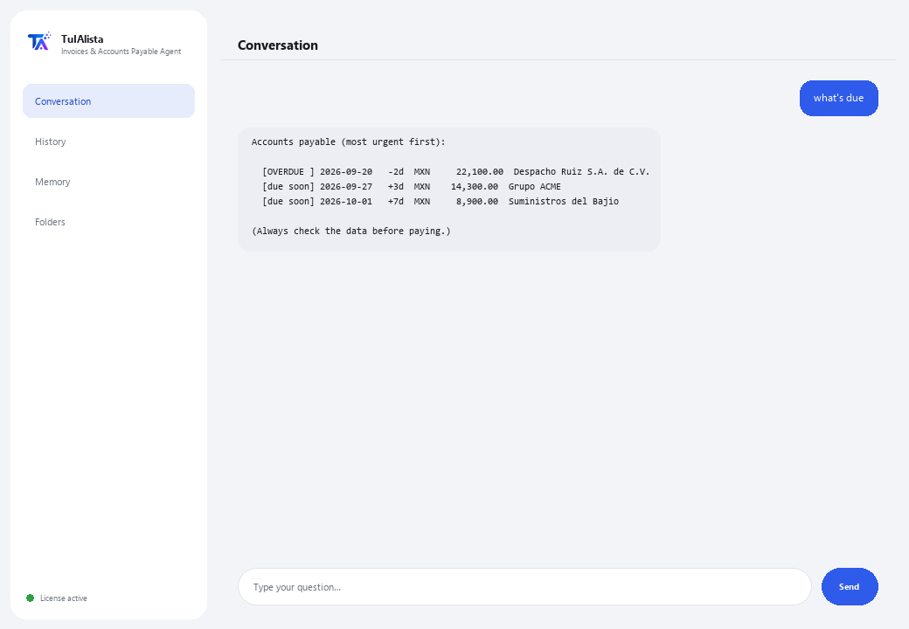

Invoices & Accounts Payable Agent
Tell it what you need in your own words and it builds your invoice Excel, tax summary and accounts payable — without you typing anything in by hand.
What does it solve and what do you need?
Entering invoices into Excel by hand takes hours, and it's easy to pay the same one twice or miss a due date. This agent reads your CFDI XML and PDF invoices, and builds your capture Excel, tax summary and accounts payable — you write what you need the way you'd write it to a person, not exact commands.
- You need: your license key (TIA-XXXX-XXXX-XXXX-XXXX) and the folder with your invoices (CFDI XML and/or PDF). No Python, no technical knowledge.
- First result in under 5 minutes: install, activate, pick your folder, and type export to get the full Excel built.
- Your invoices never leave your computer — the analysis runs locally.
soporte@tuialista.com or visit tuialista.com/soporte — we usually reply the same business day.1 What this agent does
You point it at the folder with your invoices (SAT CFDI XML and/or PDF) and it:
- Captures each invoice into an organized Excel — what's normally done by hand in hours: invoice number, vendor, tax ID, dates, subtotal, VAT, withholding, total and currency.
- Summarizes the period's taxes, adding up what each invoice declares by currency (base, tax, withholding, total).
- Builds your accounts payable with alerts for what's overdue and what's due soon.
- Detects duplicate invoices.
- Answers any question or request about your invoice portfolio in your own words — no commands to memorize.
The capture and calculation work follows fixed, already-tested rules, on your computer (no AI, no making things up): it reads CFDI XML exactly and any PDF invoice by reading its text. The result: you pay on time, without duplicating, with your invoice Excel ready without typing it in yourself.
2 Installation (2 minutes)
For Windows. No constant internet connection needed, and nothing gets uploaded to the cloud.
Download the installer from tuialista.com/descargar (Invoices agent) and open it. It creates a desktop shortcut with the logo — no Python or terminal needed.
Double-click the new icon. Paste your license key (you received it by email when you bought it) and click Activate. You'll see a green checkmark once it's valid.
Select the folder with your invoices and click Start using the agent. Next time it starts right up — it remembers your key and your folder.
3 How to use it
The agent opens a chat window, like a messaging app — not a programmer's black screen. You don't memorize exact commands: you write what you need almost like you'd ask a person, hit Send (or Enter), and it does the work. These are the 4 main things it knows how to do, with examples of how to ask:

> export / generate the Excel / capture themBuilds you an Excel with everything: capture of each invoice, tax summary and accounts payable, ready to open.
> taxes / how much VATTax summary for the period: base, tax, withholding and total, added up by currency.
> what's due / what's expiring / how much do I oweYour accounts payable, most urgent first: overdue, due soon, and current, with vendor and amount.
> duplicates / repeated invoicesDetects invoices that appear to be loaded twice (same invoice number/UUID, or same vendor and total).
> any other questionE.g.: “how much do I owe ACME”, “total by vendor”, “compare this month against last month” — the agent understands the request and builds the answer or report.
Want to see all 20 full recipes with a real example of each? Check the Recipe catalog — a separate document because it's long: catalogo_recetas.pdf next to this manual, or the interactive version at tuialista.com/guia/facturas/recetas.
4 Common use examples
Build the full month's Excel
“export” — you get an Excel with capture, taxes and accounts payable, ready to review or send to your accountant.
Weekly payment review
“what's due” → “duplicates”
Month-end tax close
“taxes for the period”
A quick question
“how much do I owe ACME this month?”
5 Frequently asked questions
Do my invoices get uploaded to the internet?
What formats does it accept?
Do I need to type the exact command?
Does it detect duplicates reliably?
Does it execute payments?
What language does it reply in?
Does it read a scanned PDF?
Does it modify my original invoices?
Can I change the folder?
What is “safe mode”?
6 Troubleshooting
It won't read a file
It says it didn't find any invoices
It doesn't detect a piece of invoice data correctly
It says “Invalid license” or asks to reconnect
The AI isn't responding to a free-form question
None of these fixed your problem? Write to us directly — we'll gladly look into it with you.
soporte@tuialista.com or visit tuialista.com/soporte — we usually reply the same business day.7 Privacy and confidentiality
Your invoices never leave your computer.
- The agent reads and processes invoices locally, on your own machine. It doesn't upload them to any server.
- The Excel capture, tax summary, accounts payable and duplicates are calculated on your machine, with fixed, already-tested rules (no AI).
- The only thing that travels over the internet is: (1) a check that your license is active — which doesn't include your invoices —, and (2) if you ask for something outside the 4 main actions (a free-form question), a relevant fragment of the information is sent to the AI engine so it can reply.